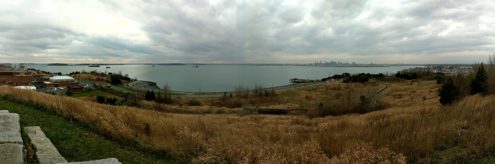
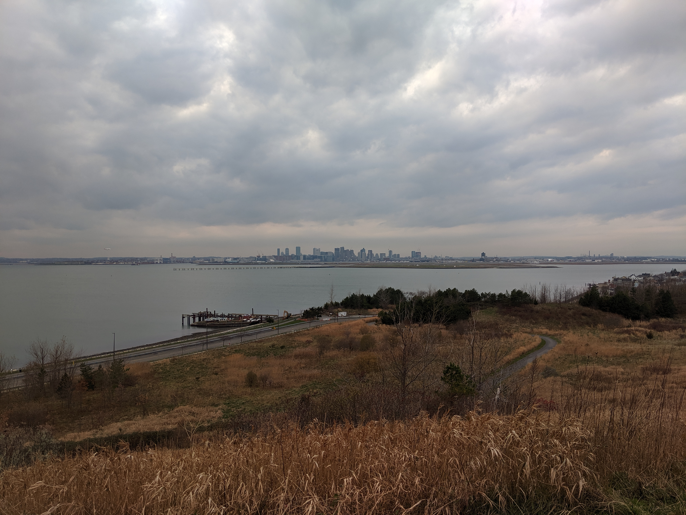
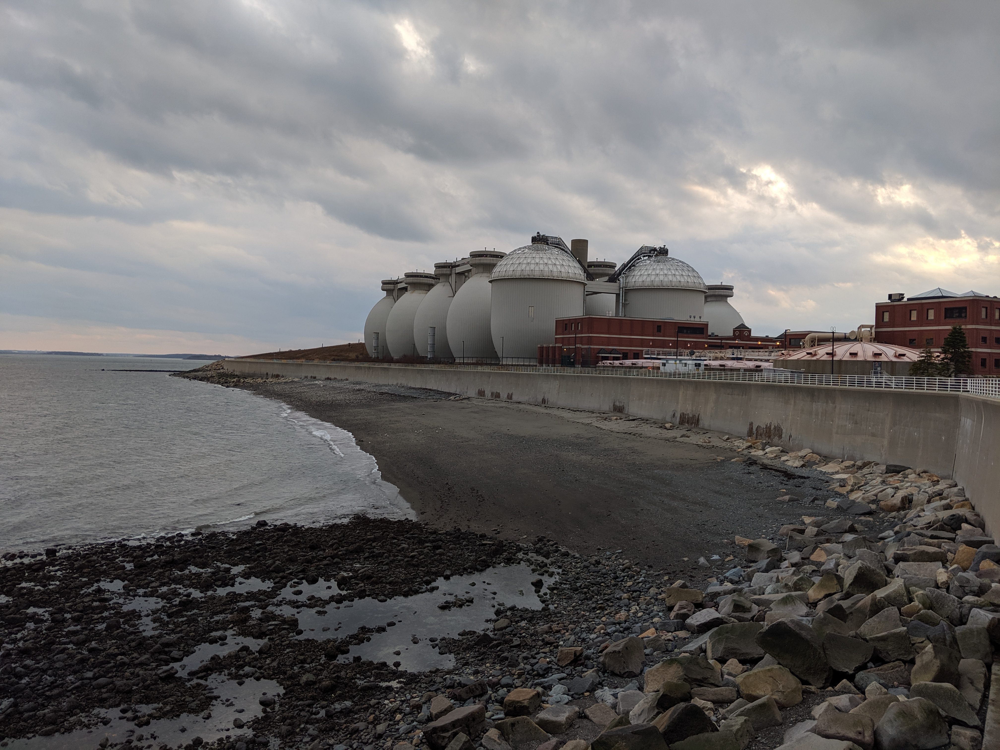
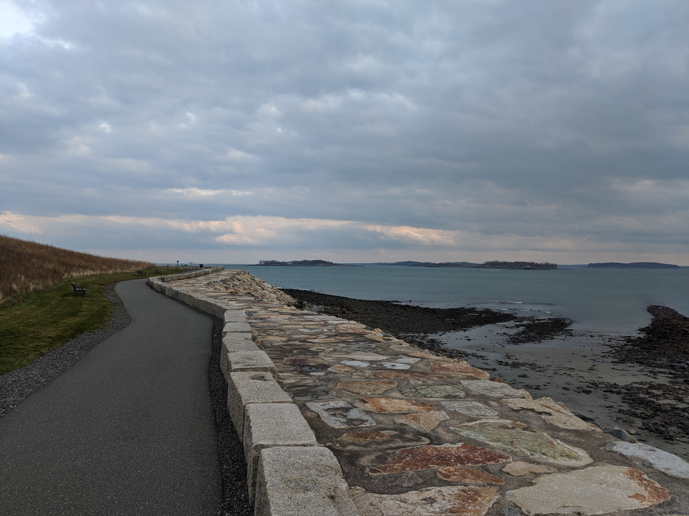
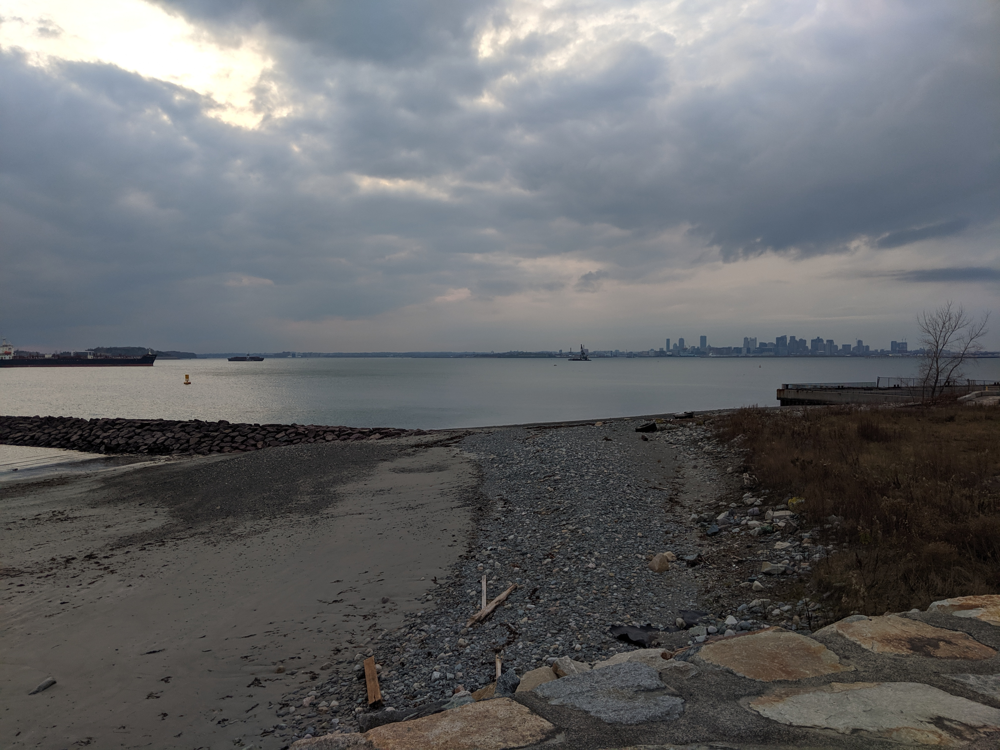
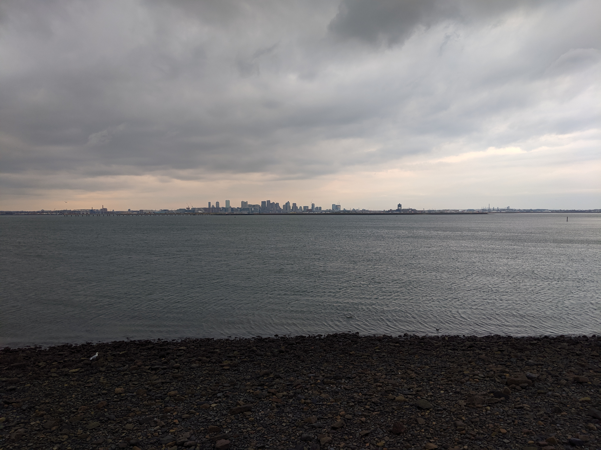

Distance
Distance Elevation
Elevation Observed Wildlife
Observed WildlifeThe middle of November in New England is a pretty dreary time. My partner and I found the perfect hike for the moment in a Hiking Through New England History book at the library. The history of the island includes famine after atrocity and is capped off with the construction of a sewage treatment facility. The walk circumnavigated the island, now a pensinsula after a storm connected it to the mainland. The treatment facility is impressive as is the range and quantity of the waste it processes. Explore this hike when you want to, sort of, escape the city and are feeling the right sort of weird.







